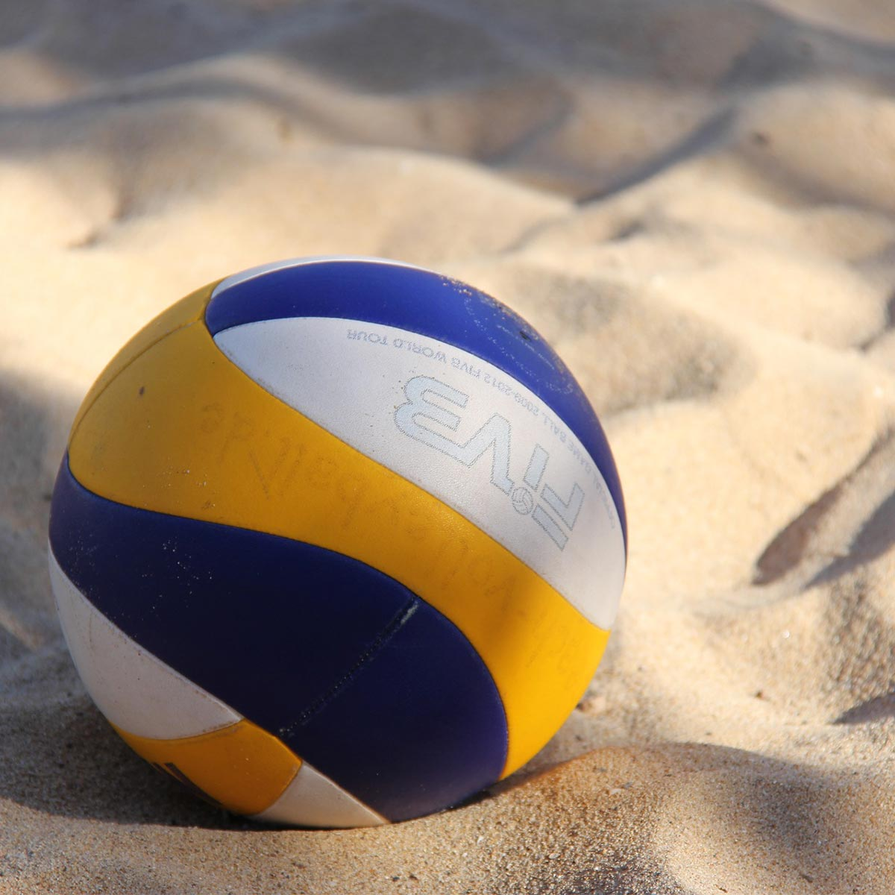

Podání
Hra začíná podáním ze zadní čáry. Spodní podání je nejjednodušší, protože míč odbíjíte zespodu pěstí nebo dlaní.
Volejbal pro začátečníky
Volejbal je týmová hra, kterou zvládne každý, kdo se naučí pár základních pravidel a držení těla. Tento průvodce vám ukáže pravidla volejbalu, tři základní údery a plán prvního tréninku.
Přejít na první trénink
Dva šestičlenné týmy stojí proti sobě a odbíjejí míč přes síť. Cílem je dopadnout míčem na soupeřovu polovinu hřiště, než ho soupeř stihne vrátit.
Kurt je dlouhý 18 metrů a široký 9 metrů. Výška sítě je 2,43 m pro muže a 2,24 m pro ženy; začátečníci často trénují s nižší sítí.
Hra začíná podáním ze zadní čáry. Spodní podání je nejjednodušší, protože míč odbíjíte zespodu pěstí nebo dlaní.
Spodní odbití předloktími slouží k zachycení podání. Ruce držte pevně spojené a míč „vedete“ tělem k nahrávači.
Horní odbití prsty nad čelem. Míč nahrajete ostatním hráčům tak, aby mohli provést smeč.
Na začátek stačí hodina a dva spoluhráči. Postupujte v tomto pořadí:
Volejbal nevyžaduje drahou výbavu. Důležitější než značka je, aby vám věci dobře seděly.
Více o oficiálních pravidlech a soutěžích najdete na webu České volejbalové federace.